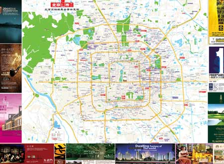

投资中国房地产，脑子进水的表现！
2006/6/26 19:06:42

曾不止一次说明，本ID在国内几个大城市都买过房子，但从来不炒房子，只是为了各地跑时不要整天住酒店，想干点动静大点的事都不方便。正因为如此，当本ID说“投资中国房地产，脑子进水的表现！”时，没有任何的利益，只是就事论事。否则，如果按照有房族的利益，当然要鼓励大家买房子，然而，本ID还是要说，只有脑子进水的才投资中国房地产。
当然，本ID买过这么多次房子，并没有脑子进水，因为这只是为了自住，而不是投资。这里说的是投资。所谓投资，必须这个投资有一个可以被权力的权力，而中国的房地产有什么权力？地球人都知道，在中国，土地不是私有的，因此，从根本上说，中国的房地产不能叫房地产，因为根本没有地，只有房，房不过是空中的一个泡沫，中国的业主只不过是泡沫里的一个长期租户而已。
本ID反对保护什么私有财产，即使站在客观的角度，没有土地私有制，所谓保护私有财产就是一句空话，请问，你连住的地方都是租来的，你能保护什么？所以就不要闹什么瞎掰的保护私有财产了。而且历史上私有财产的保护其实不过等价于对没有战争和革命的空头承诺，战争、革命一来，企图保护私有财产的自己连命都不一定保住，就甭瞎掰了。
从实际上看，投资中国的房地产还不如投机中国的权证市场，权证里一两个月长10倍的都有，而中国的房地产不过就是一张70年的权证，准确说连权证都不如，至少权证到期可能还有点什么，房子到期就什么都不是了。现在说什么到时候可以补地价之类的都不过是瞎掰，而这类瞎掰都不过是开发商闹出来的玩意。中国的开发商，某种意义上类似创设权证的庄家，只有傻子才会把他们当回事。
当然，虽然脑子进水，但只要有更进水的，这事情就有投机的机会。投资中国房地产，除非你当开发商，然后找脑子水更多的小业主把房子买走，就如同创设权证的庄家把权证卖给散户一样。这世界上不缺脑子进水的，所以这个游戏一定有得玩，谁晃晃自己的脑子，如果声音比较大，不妨参与其中。
回复